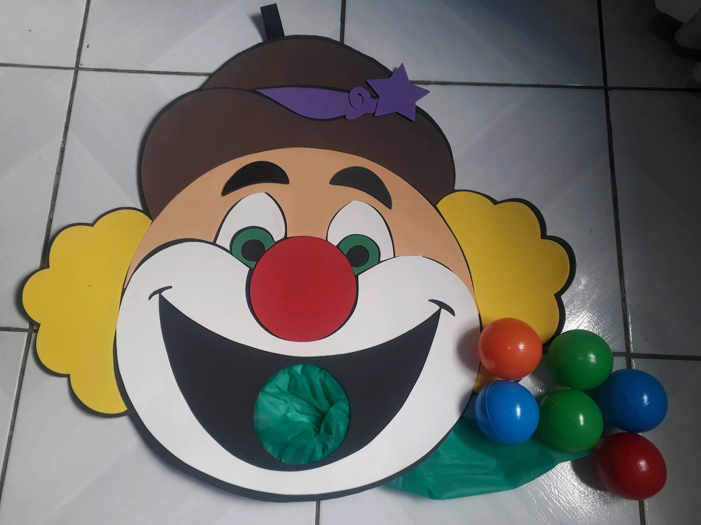
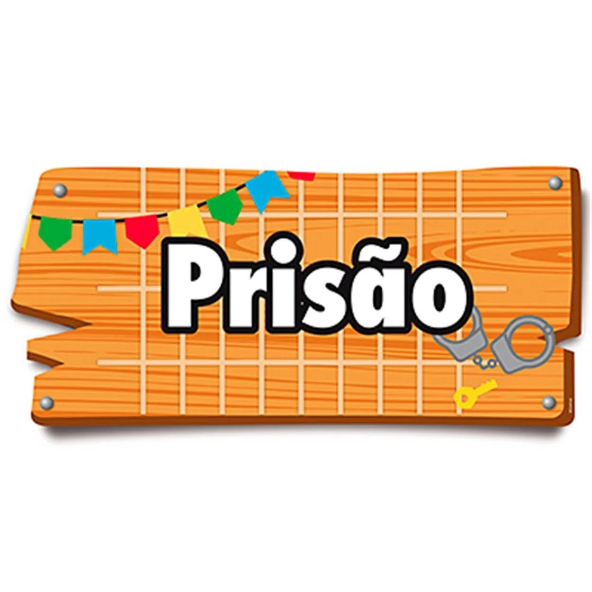
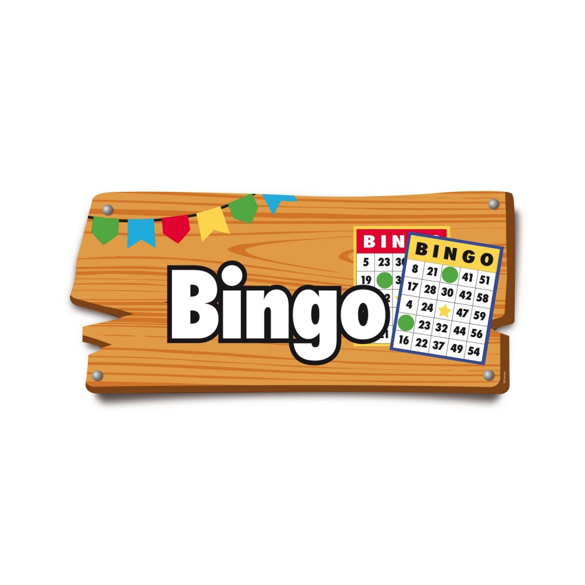
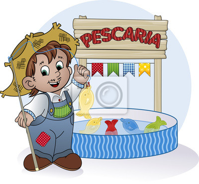

Brincadeiras da festa do Arraiá da Federar:
Boca do Palhaço:
A brincadeira da boca-do-palhaço nada mais é do que um jogo divertido de pontaria e que faz sucesso com a criançada. O objetivo é que, entre três tentativas, se acerte pelo menos uma bola dentro da boca do palhaço.
Cadeia:
Uma sala ou um outro ambiente isolado por cordas, bambus ou cadeiras serve de prisão. Lá, pelo menos há um guarda, enquanto outro anda pela festa à espera que alguém indique quem gostaria de prender. A saída da prisão deve ser determinada pelo pagamento da fiança ou por uma tarefa submetida ao presidiário.
Bingo:
Cada jogador pode usar de 1 a 4 cartelas de 24 números aleatórios de 1 a 75. A cada rodada um número é sorteado e o jogador verifica se ele está na sua cartela. O jogador completa sua(s) cartela(s) marcando os números sorteados. O objetivo é completar linhas, colunas ou diagonais, de acordo com o padrão da fase.
Pescaria:
A pescaria é uma das brincadeiras mais tradicionais de Festa Junina. Ela é simples e bem divertida. Basta recortar peixes de papel grosso (tipo papelão) e colocar números neles. Devemos colocar uma argola na boca do peixe e enterrá-lo num recipiente grande com areia
Correio Elegante:
Correio Elegante é uma brincadeira típica de festas juninas em que uma pessoa envia um bilhetinho para ser entregue a uma outra pessoa.